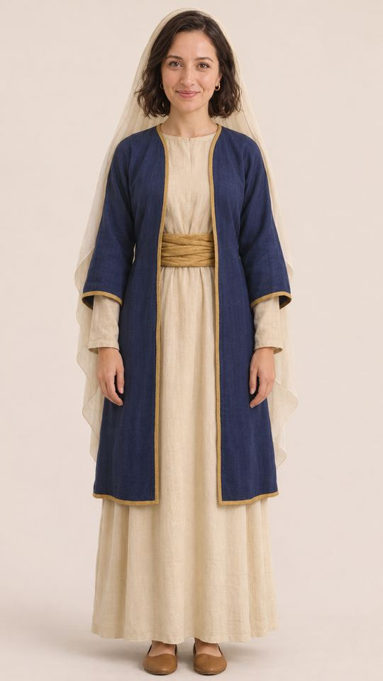
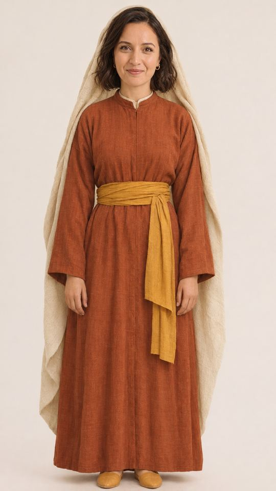
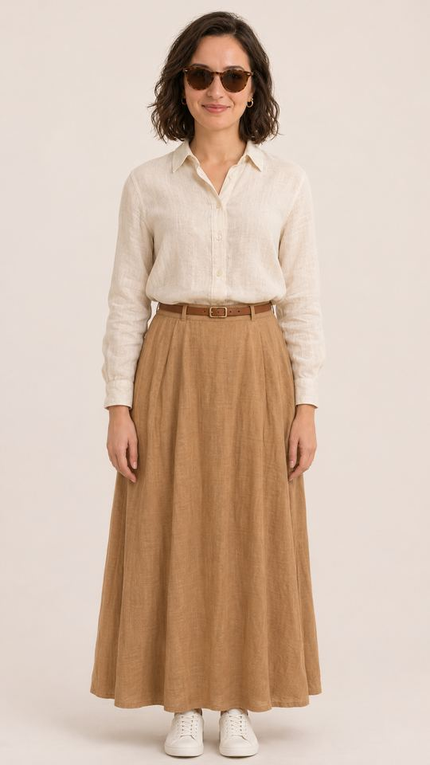

Fes · 9. yüzyıl
Hill, Fes'in dar sokaklarında, rivayete göre Fatıma el-Fihri'nin kurdurduğu Karaviyyin'in ilk taşlarının konduğu güne tanık olur.
“Bu sokak bugün hâlâ duruyor. Gitmek istersen…”
Çok yakındaFes bugün →

ile Zamanda Yolculuk
Çok yakındaGeçmişte gör, bugün git.
Hill her bölümde bir şehrin geçmişteki bir gününü yaşar, sonunda bugüne döner. Hill geçmişte bir gün yaşar; sen ise bugün gidebilirsin.
Hill, Fes'in dar sokaklarında, rivayete göre Fatıma el-Fihri'nin kurdurduğu Karaviyyin'in ilk taşlarının konduğu güne tanık olur.
“Bu sokak bugün hâlâ duruyor. Gitmek istersen…”

Hill, Saadi sultanının yeni sarayının açılış şenliğinde Marakeş'in altın çağını yaşar.
“Bu avlu bugün hâlâ duruyor. Gitmek istersen…”

Hill, Meknes'in dev kapısı Bab Mansur'un yapımını izleyen işçilerin arasında durur.
“Bu kapı bugün hâlâ duruyor. Gitmek istersen…”

Her bölümün sonunda Hill aynı yere bugün döner. Aynı sokaklar, aynı avlular sizi bekliyor.
Fas turlarına bakınİlk bölümler hazırlanıyor. YouTube'da yayınlandıkça burada izleyebileceksiniz.